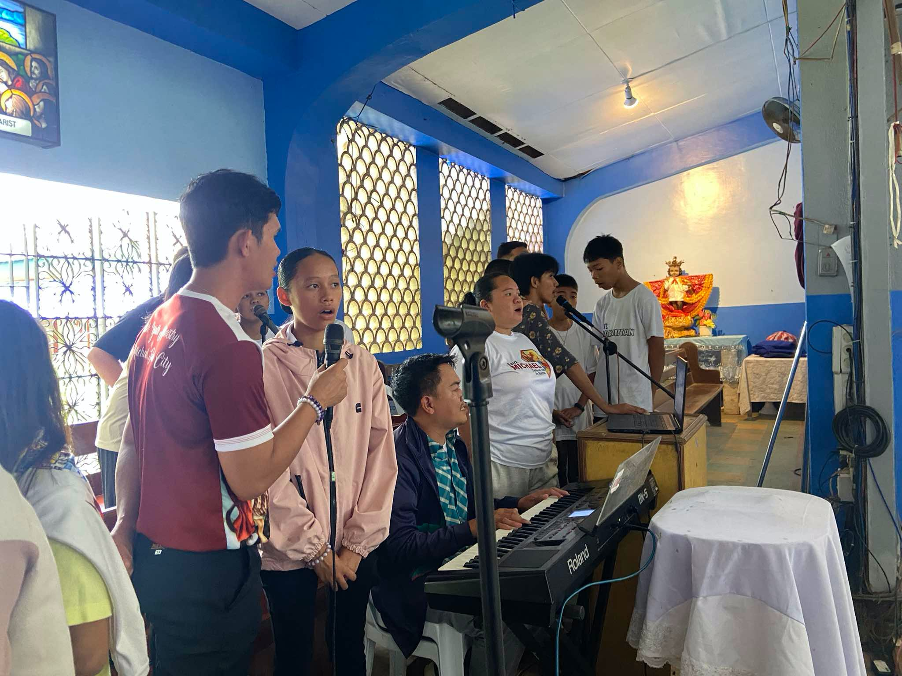
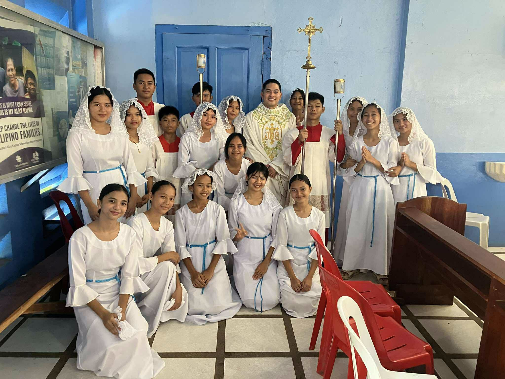
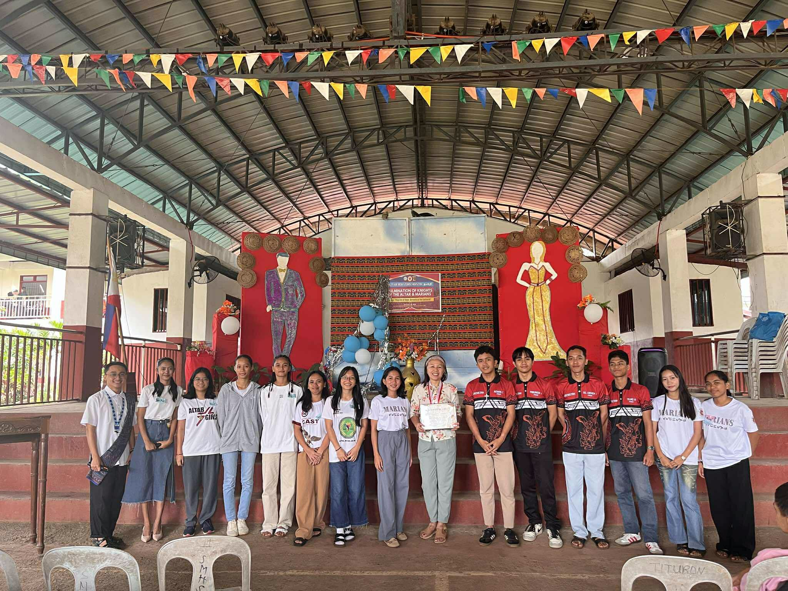
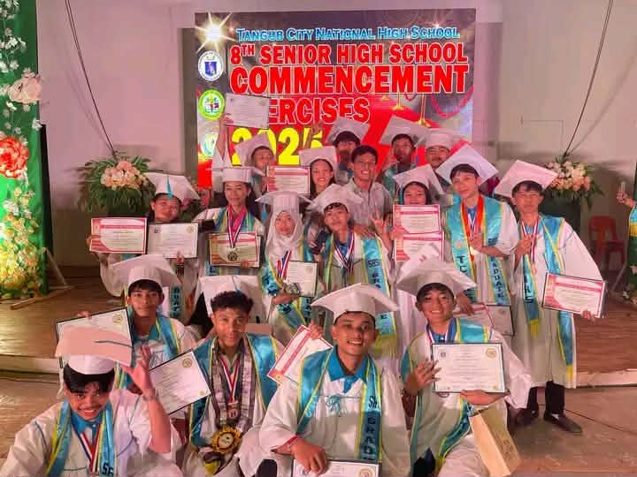

About me
I am Angel Lou B. Geografo, a person who believes that even small acts of kindness can bring to other people.
I want to use my skills and talents to inspire people, to help our community, and make the world a better place.
I believe that everyone has a purpose, and with that my purpose is to spread positivity and hope to everyone.
My guiding values:
• Faith: I trust that God guides me in every step of my life. My faith gives me strength
to face challenges and be confidence to follow what are the dreams I want in the future.
• Compassion: I try to understand and care for others, beause I know that even simple help can brighten someone's day.
• Integrity: I choose to be honest and do what is right, even when it is hard.
• Excellence: I always try my best in everything I do. I aim to grow, improve, and give high-quality work, whether in school, ministry, or in my personal life.
My Goals
My goals is to improve my skills, especially the program I have taken today. In ministries, and personal projects while practicing excellence by giving my best
in everything I do. I want to grow in confidence, continue serving in my church ministries with faith and dedication, and inspire others
through my actions. I hope to use my talents to create meaningful projects that help my community and live a life that reflects God's light.
I aim to keep growing in excellence, faith, and character to reach my full potential.
My Works / Achievements:
Through my involvement in the church and community, I strive to shine as a “Light of the World.”

Dancer Member: I am part of our church’s dance ministry, where I express joy and worship through movement.

Choir Member: As a choir member, I sing to praise God and encourage others through music.

Altar Server: I assist during Mass, learning discipline, humility, and service.

Leadership in Church: I lead teams, organize activities, and guide others with faith and dedication.
Academic Excellence: I maintain high academic performance and work with excellence.

National Certificate II Holder: I completed my NC II, showing my technical skills and willingness to grow.


To Graduate: I am committed to completing my studies, developing my skills, and achieving my academic and personal goals.
Ligh of the World
The word "Light of the World" reminds me that every person can shine in their own way. Light means hope, guidance and truth. I aim to bring light
through my actions, words, and work. When I stay positive and kind, I help others feel encouraged and strong.
I will continues learning, growing, and serving with purpose. I want to be a light - someone who inspires, uplifts, and brings hope wherever I go. With God's
guidance, I believe I can make a difference.
“The Lord is my light and my salvation—whom shall I fear?”